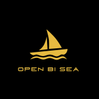
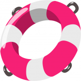
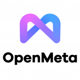
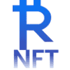
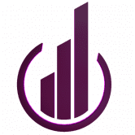
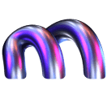
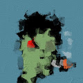

WorldSwap - BALI Edition WorldSwap.Finance 是增强型多链单产农业生态系统的核心，其设计和实施考虑了一个简单而强大的理念：提供超高产的独立农场，同时为农民和农民提供一个不断增长的活跃和
WorldSwap - HANOI Edition WorldSwap.Finance 是增强型多链单产农业生态系统的核心，其设计和实施考虑了一个简单而强大的理念：提供超高产的独立农场，同时为农民和农民提供一个不断增长的活跃和
 OpenBiSea OpenBiSea NFT 市场是一个智能合约，以及 iOS、Android 和 Web UI 应用程序。这是一个简单的分步指导解决方案，用于购买、出售和进行 NFT 拍卖（基于智能合约）
OpenDAO OpenDAO ($SOS) 是 NFT 生态系统的代币。对所有在 OpenSea 上交易过的用户进行空投。持有的国债将用于保护 OpenSea 上的交易者、支持 NFT 艺术家/社区和开发者资助。 $SOS 总额的 20% 用于质
OpenLeverage OpenLeverage 是一种无需许可的借贷和保证金交易协议，具有聚合的 DEX 流动性，使零售和机构客户能够高效、安全地做多或做空 DEX 上的任何交易对。这意味着任何人都可以
 OpenLuck OpenLuck 是一个基于 BNB 链的去中心化跨链 NFT 市场，充满创新和创造力。 我们的目标是成为全球性和创造性的市场，用户可以在其中交易驻留在各种区块链中的 NFT，
 OpenMeOpenMeta 是 MDEX 基金会孵化的投资组合项目，可以享受 MDEX 的宣传、用户基础和营销资源的持续支持。 OpenMeta 是 MDEX 基金会孵化的投资组合项目，可以享受 MDEX 的宣传、用户基础和营销资源的持续支持。 OpenMeta 是一个综合性的 NFT 市场，由 4 个主要功能组成：NFT 初级、NF
OpenPFP OpenPFP.com 将于 2022 年 3 月 28 日推出。OpenPFP.com 由 Radio Caca (RACA) 孵化，并将成为以太坊 NFT 的下一个大型市场。 OpenPFP.com 将成为第一个与我们广阔的 3D 元宇宙，即美国火星
OpenSwap OpenSwap 是 Harmony 网络上的 DeFi 协议，具有简单的单产农业功能；用于连接 Harmony、以太坊和币安智能链网络的跨链工具；以及用户交易、提供流动性和从交易中赚
Opium Exchange Opium Exchange 是一个开放的、非托管的去中心化衍生品交易平台。我们之前为 ETH 期货、天然气期权、即将推出的 DeFi 代币的合成预市场、信用违约掉期、利率掉期和二元期
Optimistic Apes 我们相信 Optimism 将成为以太坊未来的重要组成部分，因此我们希望成为 Optimism 上首批 NFT 收藏之一。我们称这个项目为“乐观猿”。 如果您是 Optimism 的长期用户，您可能已经注
Orbit Bridge Orbit-chain 是一种多资产区块链，通过去中心化的区块链间通信（IBC）存储、传输和验证存在于各种公共区块链上的信息和资产。 Orbit Chain 一直致力于超越限制传统公共
Origin Dollar (OUSD) OUSD 是一种新型稳定币，无需任何质押或锁定即可自动从 DeFi 协议中获得收益。您的收入不断复合，并反映在您不断增加的 OUSD 余额中，该余额由其他经过验证的稳定
Otherdeed for Otherside Otherdeed 是在 Otherside 取得土地的关键。每个都有独特的环境和沉积物混合 - 有些拥有资源，有些拥有强大的文物。在极少数情况下，Koda 漫游。 Otherside 是一个游戏化的、可
OtterClam OtterClam 是一个去中心化的生态系统，在元界中融合了金融、治理和 NFT 的元素。这三个组件分别对应于 OtterClam 的金库、DAO 和 Otter Kingdom。OtterClam 是
Outcastverse Founders Pass 450 名 OUTCASTVERSE 创始人通过。将分三组发布，每组 150 个，每组 1 - 450 个 3 个 NFT 系列：OUTCAST、GURDIAN、X。每个系列都包含 4000 件以程序方式生成的独特
 PayRue NFT PayRue NFT Marketplace 为 NFT 创作者和艺术家提供了在 Web 应用程序中以及通过 Apple Store 和 Google Play Store 中的 PayRue Wallet 直接创建和上传 NFT 的机会。这些服务支持交换和用户友好的界面。用户可以在
 Multinode.Finance 稳定的回报，Multinode.Finance 支付每个节点的每日回报，这实际上是每天 1% 到 2% 之间。 Multinode.Finance节点协议不
 Multitransfer Multitransfer 是一种工具，可让您一次将您的加密货币发送到数百个钱包地址。您只需上传一个 Excel/csv/txt 文件，其中包含您要发送的地址和余额，选择一个代币并在 1 分钟内发送
Murakami.Flowers Official Murakami.Flowers 是艺术家村上隆的代表作品——花卉，以点状艺术的形式表现出来的日本电视游戏创作的作品。该作品正在以数字108为关键词进行开发；108个背景和
MURI by Haus MURI 是由 haus 创作的 10.000 版系列，在夜城中有着深刻的故事。六种独特的 DNA，通过 MURIVERSE，我们将提供 6 个独特的 DNA + 额外的特征和特征。下面是 3
 Museum - The White Room Museum - The White Room是一个生成 NFT 项目，它揭示了 NFT 艺术的历史、艺术和文化意义。 每一件独特的作品都将不断演变成与庆祝日历日相匹配的身份。正如人们在圣
Mutant Garden Seeder Mutant Garden Seeder 由艺术家 Harm van den Dorpel 于 2021 年与 Folia 合作发布的 512+1 个可生成的独特以太坊 NFT 组成。 每个区块号只能铸造一个突变体。这个选择的出生区块的交易哈希被用作确定
MUTANT PUNKS CITY MUTANT PUNKS CITY 是一个 NFT 集合，包含 11111 个独特的 Mutant Punks，其中包含数百个元素，灵感来自原始 Cryptopunks.Ethereum 区块链。价格：0.08 ETH 每件艺术品都是独一无二的，非常细致
MutantCats Mutant Cats 是第一个购买和细分 Cool Cats 以分发给其成员的 DAO。9,999 只猫因以太坊区块链上的疾病而发生变异。通过质押获得 $FISH 被动收入并拥有 Cool Cats 保险库的一
Muuu Finance Muuu Finance 提供最简单的方法来最大化您的奖励，而无需锁定 DEX 和 Lending 协议的原生资产。 Muuu Finance 是 Astar Network 上的第一个原生收益助推器，可让您在不锁定 KGL 的情况下最大化您的
My Crypto Heroes My Crypto Heroes (MCH) 是一款基于以太坊和多边形区块链的多人角色扮演游戏。通过任务升级你的历史英雄，加入玩家与玩家的战斗，征服 MCH 世界。您的英雄和物品由区块链
My Crypto Saga My Crypto Saga 是一款适合 2 到 4 名玩家的心智卡牌游戏，您可以在其中与其他玩家实时对战。10张“Kami-cards”组织起来，你可以用你的策略、技巧和
My DeFi Pet My DeFi Pet 是一款结合了 NFT 和 DeFi 功能的区块链游戏，为用户提供了非常独特的方式来体验游戏并通过 Play2Earn 赚钱。 My DeFi Pet 结合了传统游戏架构、NFT 和 DeFi 特性，带来独
My Pet Hooligan 来自 AMGI Studios 的交互式 NFT 体验。888 个宠物流氓的 NFT 集合——独特的 3D 角色在以太坊区块链上构建，具有各种独特的特征。您的 NFT 不仅具有实用性，还将在我们不
MyFunding.Network MyFunding.Network 是一个开源智能合约，它使用专业交易者提供的下一代技术分析和策略来产生高利润交易。 MyFunding.Network 是最先进的交易机器人 dapp，可为加密交易提供最大利润。


，以赚取交易费和代币排放。")


 是一款基于以太坊和多边形区块链的多人角色扮演游戏。通过任务升级你的历史英雄，加入玩家与玩家的战斗，征服 MCH 世界。")